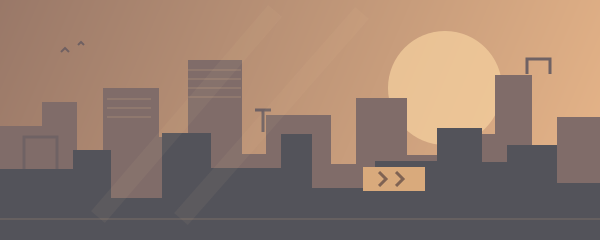

範例 · 剩餘 2 天
冒險補給計畫
把每日探索變成一場小旅行。走訪不同區域，收集秋日旅途的記憶。
查看示範活動內容
示範活動任務：完成 3 次探索、拜訪指定地點、領取活動獎勵。記得確認活動進度，並在活動結束前領取獎勵。
DON’T MISS THE GOOD STUFF
把值得期待的事，放進你的遊戲日常。
讓限時的小驚喜，都有機會被記得。
把每日探索變成一場小旅行。走訪不同區域，收集秋日旅途的記憶。
示範活動任務：完成 3 次探索、拜訪指定地點、領取活動獎勵。記得確認活動進度，並在活動結束前領取獎勵。
在每次出發前，收下一份補給。記得回到列車，看看今天的小禮物。
示範活動任務：每日登入並領取補給，累積 3 次簽到。活動日期與內容僅用於展示版面。

範例 · 剩餘 12 天熟悉的街角藏著新的發現。完成街區委託，解鎖一份屬於你的驚喜。
示範活動任務：與街區夥伴對話、完成尋寶委託、兌換活動獎勵。此為虛構活動，並非遊戲實際公告。
為日常預留一點準備時間。
首頁、遊戲收藏、每日任務與活動看板，現在可以自由切換瀏覽。
此處可放置維護時間、更新重點與待領獎勵。日期與公告內容皆為示例。